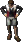
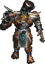
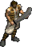
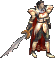
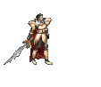

|
2002年12月11日
韓國測試伺服器檔案內容 - 反王肯恩登場！
韓國測試伺服器再次更新大量NPC圖檔，如下（有時間才制作動畫GIF）：
|
|
 |
|
| 小童(Child) |
吉普賽人(Gypsy) |
年青人(Young Guy) |
爺爺(Grandpa) |
|
|
 |
|
| 受魔化的狼(Diawolf) |
奇美亞(Kimera)
（這是三不像，還是四不像呢？） |
牛人首領(Minotaur Boss) |
骨龍(Bone Dragon) |
|  |
 |
 |
|
| 山賊 |
反王肯恩！(Ken Lauhel) |
反王肯恩攻擊動畫 |
|
美國正式伺服器12月11日更新內容
原文：美國天堂官方網站公告
加入古魯丁及銀騎士村競技場的無限之戰(Death Match)，古魯丁的等級限制為25-45，而銀騎士村則為1-15。
香港LWC大賽短評
香港推出了壓軸活動LWC大賽，這個活動可以說是非常考驗玩家對遊戲全面的認識及技巧，因為大家不能使用自己的角色，大家要在有限的資源下建立預設的角色與其他對手比賽。整個活動主要可以分為三關：第一關是在有限的道具下（1000K天幣 10祝防 10祝武 10紅防 10紅武）衝出最有利自己的武器和防具；第二關是要在有限的時間（合共24小時）內憑著有限的裝備升到最高的等級；而最後一關（死鬥）則是考驗玩家隊伍的策略及團體合作性。相信此活動必定有一番龍爭虎鬥，不過最後希望官方能夠將練功伺服器的所有道具設為不能轉移及禁止一切的道具交換，否則部分擁有多個帳號的隊伍可能會將數個帳號的道具堆在一起使用，造成不公平的情況，就像去年台灣保時捷活動一樣．．． |